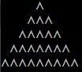
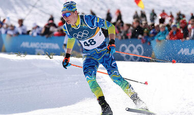

Зобразити рівнобедрений трикутник із символів ^. Висоту задає користувач. Наприклад, на екрані висота = 5.

Спортсмен-лижник в перший день тренування пробіг 10 км. Кожного наступного дня він збільшував довжину пробігу на P% від довжини пробігу попереднього дня (P – дійсне число, 0 < P < 50). Визначити, після якого дня тренування сумарний пробіг лижника за всі дні перевищить 200 км. Вивести знайдену кількість днів K (ціле) і сумарний пробіг S (дійсне число).
